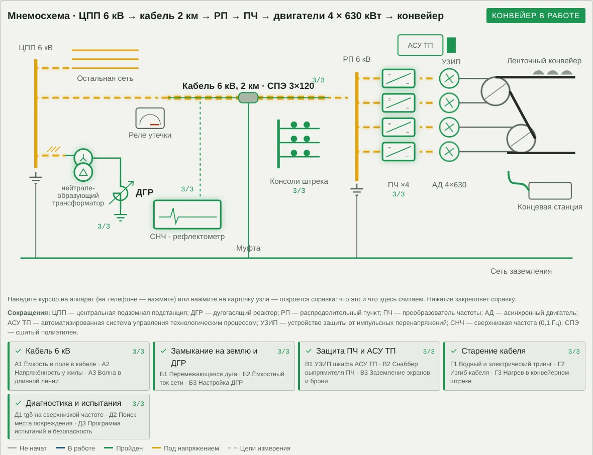
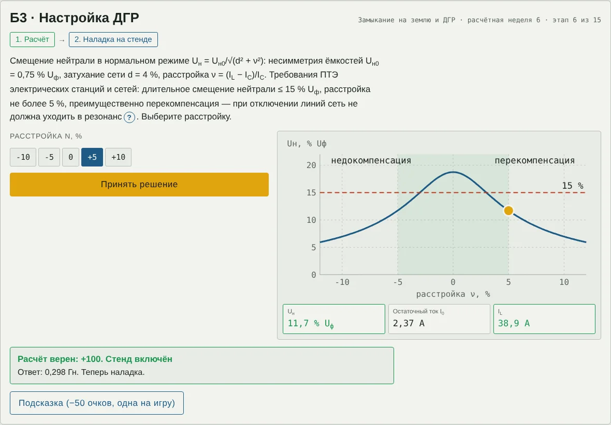

Техника высоких напряжений
Методические указания для студентов
Кабельная сеть магистрального конвейера 6 кВ
Деловая игра и шпаргалка по сквозному заданию, вариант 4, недели 1–15
Цель занятия. Закрепить расчёты 15 недель задания на одном объекте — кабельной сети 6 кВ магистрального конвейера шахты — и научиться принимать по ним решения: выбирать толщину изоляции, настройку дугогасящего реактора, защиту, число кабелей и программу испытаний. Что понадобится: компьютер или телефон с браузером, калькулятор с натуральным логарифмом, эти указания. Ссылку на игру и номер подварианта (К1, К2 или К3) выдаёт преподаватель. Продолжительность: 60–90 минут; прогресс сохраняется в браузере. |
1. Объект: кабельная сеть конвейера
Центральная подземная подстанция (ЦПП) 6 кВ по кабельной линии длиной 2 км питает распределительный пункт (РП) приводной станции. От РП работают четыре преобразователя частоты (ПЧ) и четыре асинхронных двигателя по 630 кВт, вращающие приводные барабаны ленточного конвейера. Сеть 6 кВ — с изолированной нейтралью; ёмкостный ток замыкания на землю компенсирует дугогасящий реактор (ДГР), подключённый к нейтрали нейтралеобразующего трансформатора на ЦПП. Рядом с силовыми кабелями — шкаф АСУ ТП с УЗИП; к передвижной концевой станции идёт гибкий кабель.

Рис. 1. Мнемосхема после прохождения всех этапов: ЦПП 6 кВ с нейтралеобразующим трансформатором и ДГР → кабель 2 км → РП → ПЧ → двигатели → конвейер; реле утечки, консоли штрека, концевая станция, СНЧ-установка и рефлектометр
Зачем треугольник у нейтралеобразующего трансформатора. При замыкании на землю ток реактора входит в нейтраль звезды и делится поровну на три фазы — это токи нулевой последовательности, одинаковые по фазе. Их магнитный поток в трёхстержневом сердечнике не может замкнуться по стали; без треугольника сопротивление нейтрали было бы велико, и реактор почти не получал бы тока. В замкнутом треугольнике наводится ток, который этот поток гасит. Треугольник никуда не подключают.
| Узел | Этапы | Что выбирается на стенде |
|---|---|---|
| Кабель 6 кВ | А1–А3 | радиус средней напряжённости; толщина изоляции; согласующее сопротивление |
| Замыкание на землю и ДГР | Б1–Б3 | мера против перемежающейся дуги; нужна ли компенсация; расстройка реактора |
| Защита ПЧ и АСУ ТП | В1–В3 | длина проводников УЗИП; конденсатор снаббера; схема заземления экранов |
| Старение кабеля | Г1–Г3 | допустимая длина водного дерева; радиус изгиба; число параллельных кабелей |
| Диагностика и испытания | Д1–Д3 | оценка фаз по tgδ; методика поиска повреждения; программа испытаний |
2. Подварианты: кабель линии
В начале игры выберите кабель своего подварианта (если преподаватель дал ссылку с номером, кабель уже выбран). От него зависят исходные данные почти всех этапов; после начала работы кабель не меняется.
| Подвариант | К1 | К2 | К3 |
|---|---|---|---|
| Кабель | СПЭ 3×120 | СПЭ 3×185 | Резина 3×120, гибкий |
| Радиус жилы с экраном r, мм | 7,0 | 8,5 | 8,0 |
| Толщина изоляции Δ, мм | 2,5 | 2,5 | 4,0 |
| ε изоляции | 2,3 | 2,3 | 3,0 |
| Наружный диаметр D, мм | 58 | 68 | 72 |
| Iдоп на воздухе при 25 °C, А | 300 | 395 | 320 |
| θдоп жилы, °C | 90 | 90 | 75 |
| Экраны и броня, Ом/км | 0,35 | 0,25 | 0,60 |
| Eдоп (в задании), кВ/мм | 2,0 | 2,0 | 1,5 |
| Наименьший радиус изгиба | 15D | 15D | 6D |
3. Правила игры
Наведите указатель на аппарат на схеме — всплывёт справка; нажатие закрепляет её (на телефоне — касание). Значок «?» в тексте задания поясняет термин и бесплатен. Сокращения расшифрованы под схемой.
Каждый из 15 этапов состоит из двух шагов: расчёт (ввести число) и решение на интерактивном стенде. Всего 30 проверок.
Числовой ответ принимается с допуском ±3 %; дробную часть можно отделять запятой или точкой.
«Жизни» — реле утечки: каждая ошибка двигает стрелку на деление, на шестой реле отключает линию и игра начинается заново. Три верных ответа подряд с первой попытки возвращают стрелку на деление.
Очки: верно с первой попытки — 100, после ошибки — 50; подсказка (одна на игру) снимает 50. Максимум — 3000.
На стенде зелёные показания — условие выполнено, красные — нет. Часто нужно наименьшее или наибольшее подходящее значение — читайте задание до конца.
После последнего этапа нажмите «Пуск», затем «Скопировать итог» и отправьте текст преподавателю.

Рис. 2. Пример стенда: этап Б3, настройка дугогасящего реактора. Слева — выбор расстройки, справа — резонансная кривая смещения нейтрали и показания
4. Шпаргалка по этапам
Кабель 6 кВ
Кабельная линия ЦПП — РП приводной станции длиной 2 км; кабель выбирается в начале работы (подвариант К1, К2 или К3). Три этапа: ёмкость и поле в изоляции, напряжённость у жилы, волновые параметры линии.
А1 · Ёмкость и поле в кабеле (неделя 1)
Дано. Подвариант кабеля: r — радиус жилы с полупроводящим экраном, Δ — толщина изоляции, ε — диэлектрическая проницаемость (таблица подвариантов). L = 2 км, Uф = 6/√3 = 3,464 кВ, f = 50 Гц.
Пояснение. У кабелей всех трёх подвариантов каждая жила имеет свой экран, поле между жилой и экраном радиальное, как в коаксиальном кабеле. Ёмкость и напряжённость считают по формулам цилиндрического конденсатора (учебник Важова, разд. 3.6). Напряжённость максимальна у жилы и убывает к экрану; на радиусе r* = Δ/ln(R/r) она равна средней Uф/Δ.
(1)
(2)
(3)
Расчёт. Найти: зарядный ток одной фазы линии, А.
Решение на стенде. Выбрать из ряда радиус, на котором напряжённость равна средней.
Ответ: расчёт ____________ А; решение ______________________
А2 · Напряжённость у жилы (неделя 2)
Дано. Размеры кабеля — из А1. Допустимая рабочая напряжённость (в задании): сшитый полиэтилен — 2,0 кВ/мм, этиленпропиленовая резина — 1,5 кВ/мм. Ряд толщин — на стенде.
Пояснение. Наибольшая напряжённость — у поверхности жилы. В бумажном кабеле с поясной изоляцией поле нерадиальное, есть составляющая вдоль слоёв бумаги, и допустимая напряжённость примерно вдвое ниже, чем при радиальном поле (учебник Важова, разд. 3.6.1); поэтому поясные кабели применяют только до 10 кВ.
(4)
Расчёт. Найти: наибольшая напряжённость у жилы, кВ/мм.
Решение на стенде. Выбрать наименьшую толщину изоляции, при которой Emax ≤ Eдоп.
Ответ: расчёт ____________ кВ/мм; решение ______________________
А3 · Волна в длинной линии (неделя 3)
Дано. c = 300 м/мкс; ε — по подварианту; L = 2 км. Ряд согласующих сопротивлений: 5; 10; 15; 25; 50 Ом.
Пояснение. Электромагнитная волна идёт в изоляции, её скорость v = c/√ε. Волновое сопротивление коаксиальной линии Zв = (60/√ε)·ln(R/r). Выход рефлектометра согласуют с Zв, чтобы отражённый импульс не отражался повторно от прибора. В реальных кабелях полупроводящие слои замедляют волну до 160…170 м/мкс — рефлектометр настраивают по известной длине.
(5)
(6)
Расчёт. Найти: время пробега волны по линии, мкс.
Решение на стенде. Выбрать согласующее сопротивление, ближайшее к Zв.
Ответ: расчёт ____________ мкс; решение ______________________
Замыкание на землю и ДГР
Сеть 6 кВ с изолированной нейтралью и дугогасящим реактором (ДГР), подключённым к нейтрали нейтралеобразующего трансформатора на ЦПП. Три этапа: перемежающаяся дуга, ёмкостный ток сети, настройка реактора.
Б1 · Перемежающаяся дуга (неделя 4)
Дано. C = 3C12 (учебник Важова); затухание за полпериода свободных колебаний 0,85; амплитуда фазного напряжения √2·6/√3 = 4,90 кВ.
Пояснение. По теории Петерсена (учебник Важова, разд. 4.8.3) при зажигании дуги заряды здоровых фаз перераспределяются, напряжение на ёмкостях становится Ut=0, источник дозаряжает их до 1,5Uф с колебаниями. После погасания дуги нейтраль смещается, и при повторных зажиганиях перенапряжение растёт. Теория даёт верхнюю оценку; на практике обычно не больше 3Uф, редко 3,5Uф.
(7)
(8)
Расчёт. Найти: амплитуда перенапряжения на здоровой фазе при первом зажигании, кВ.
Решение на стенде. Выбрать меру для сети ЦПП.
Ответ: расчёт ____________ кВ; решение ______________________
Б2 · Ёмкостный ток сети (неделя 5)
Дано. Ёмкость фазы остальной сети секции ЦПП — 10,5 мкФ; ёмкость фазы линии конвейера — C0L из А1. Порог компенсации — 30 А (ПУЭ, п. 1.2.16).
Пояснение. Ток замыкания на землю определяется ёмкостью всей электрически связанной сети (учебник Важова, ф. 4.97). Дуга в сетях 6–10 кВ быстро гаснет сама только при токах до 20…30 А.
(9)
Расчёт. Найти: ток однофазного замыкания на землю, А.
Решение на стенде. Решить, нужна ли компенсация.
Ответ: расчёт ____________ А; решение ______________________
Б3 · Настройка ДГР (неделя 6)
Дано. CΣ — из Б2. Несимметрия ёмкостей Uн0 = 0,75 % Uф, затухание сети d = 4 %. Требования ПТЭ: смещение нейтрали длительно ≤ 15 % Uф, расстройка не более 5 %, преимущественно перекомпенсация.
Пояснение. Реактор подключают к нейтрали нейтралеобразующего трансформатора: обмотка 6 кВ — звезда с выведенной нейтралью, вторая — замкнутый треугольник. Треугольник никуда не подключают: по нему замыкаются токи нулевой последовательности, и сопротивление нейтрали становится малым. При точной настройке частота собственных колебаний равна 50 Гц (резонансное заземление нейтрали), а смещение нейтрали в 1/d раз больше, чем без реактора (учебник Важова, разд. 4.8.4–4.8.5).
(10)
(11)
Расчёт. Найти: индуктивность реактора при точной настройке, Гн.
Решение на стенде. Выбрать расстройку ν.
Ответ: расчёт ____________ Гн; решение ______________________
Защита ПЧ и АСУ ТП
Преобразователи частоты, шкаф АСУ ТП, экраны и броня кабеля. Три этапа: УЗИП, снаббер выпрямителя, заземление экранов.
В1 · УЗИП шкафа АСУ ТП (неделя 7)
Дано. Питание контроллера 230 В; импульсная прочность Uw = 1,5 кВ (категория I); УЗИП класса III, Up = 0,9 кВ; L′ = 1 мкГн/м, di/dt = 1 кА/мкс.
Пояснение. Индуктивность проводников подключения УЗИП добавляет к его уровню защиты падение L′·l·di/dt — около 1 кВ на метр (ГОСТ Р МЭК 62305-4). Защита эффективна, если Up,f ≤ 0,8Uw.
(12)
Расчёт. Найти: эффективный уровень защиты при длине проводников 0,5 м, кВ.
Решение на стенде. Выбрать наибольшую допустимую длину проводников.
Ответ: расчёт ____________ кВ; решение ______________________
В2 · Снаббер выпрямителя ПЧ (неделя 8)
Дано. Силовая ячейка ПЧ 690 В; Irr = 60 А; Lσ = 30 мкГн; допустимое напряжение диодов 1500 В; Ud0 = √2·690 = 976 В; паразитная ёмкость 10 нФ.
Пояснение. При запирании диода ток обратного восстановления обрывается в индуктивности рассеяния, и её энергия переходит в ёмкость — как при срезе тока в выключателе. RC-снаббер ограничивает выброс; вторая ступень — варистор звена постоянного тока, третья — ОПН на вводе 6 кВ.
(13)
Расчёт. Найти: наименьшая ёмкость снаббера, мкФ.
Решение на стенде. Выбрать конденсатор из ряда.
Ответ: расчёт ____________ мкФ; решение ______________________
В3 · Заземление экранов и брони (неделя 9)
Дано. Сопротивление экранов и брони (по подварианту), Ом/км; ток IC из Б2 возвращается к ЦПП по экранам; L = 2 км. Ориентир задания для напряжения прикосновения — 40 В.
Пояснение. Если экраны заземлены только на ЦПП, при замыкании на землю в конце линии экран получает потенциал ICRэL. В шахте броню и экраны всех кабелей присоединяют к общешахтной сети заземления; у трёхжильного кабеля токи в экранах при симметричной нагрузке малы.
(14)
Расчёт. Найти: напряжение экрана в конце линии при заземлении только на ЦПП, В.
Решение на стенде. Выбрать схему заземления.
Ответ: расчёт ____________ В; решение ______________________
Старение кабеля
Кабели на консолях конвейерного штрека и гибкий кабель концевой станции. Три этапа: триинг, изгиб, нагрев.
Г1 · Водный и электрический триинг (неделя 10)
Дано. Размеры кабеля — из А1. Порог зарождения электрического триинга (в задании) — 4 кВ/мм. Длина водного дерева в расчёте — 0,4Δ.
Пояснение. Водные деревья растут в полиэтилене и резине под действием поля и влаги. Сами по себе они не канал пробоя, но проводят лучше изоляции и сокращают её рабочую толщину; на их вершинах зарождаются электрические деревья — каналы частичных разрядов (учебник Важова, разд. 1.2.2.4). Грубая модель: дерево проводит, жила как бы утолщается до r + l.
(15)
Расчёт. Найти: напряжённость на фронте водного дерева длиной 0,4Δ, кВ/мм.
Решение на стенде. Найти наибольшую длину дерева, при которой E ≤ 4 кВ/мм.
Ответ: расчёт ____________ кВ/мм; решение ______________________
Г2 · Изгиб кабеля (неделя 11)
Дано. Наружный диаметр D (по подварианту). Наименьший радиус изгиба: бронированные кабели из сшитого полиэтилена — 15D, гибкий резиновый — 6D.
Пояснение. При изгибе наружные слои растягиваются на ε ≈ D/(2R). Многократный изгиб вызывает микротрещины и отслоение полупроводящих экранов; в зазорах загораются частичные разряды. Бронированный кабель прокладывают неподвижно; к передвижной концевой станции идёт гибкий кабель.
(16)
Расчёт. Найти: относительное растяжение при радиусе 0,6 м, %.
Решение на стенде. Выбрать наименьший радиус изгиба из ряда.
Ответ: расчёт ____________ %; решение ______________________
Г3 · Нагрев в конвейерном штреке (неделя 12)
Дано. Iдоп и θдоп — по подварианту; воздух в штреке 35 °C; поправка на прокладку пучком 0,85; ток линии 275,5 А.
Пояснение. Допустимый ток уменьшают, если среда теплее 25 °C и кабели лежат пучком. Перегрев ускоряет тепловое старение изоляции.
(17)
Расчёт. Найти: допустимый ток с поправками, А.
Решение на стенде. Выбрать число параллельных кабелей.
Ответ: расчёт ____________ А; решение ______________________
Диагностика и испытания
Установка сверхнизкой частоты (СНЧ, 0,1 Гц), рефлектометр, установка прожига. Три этапа: tgδ на СНЧ, поиск места повреждения, программа испытаний и безопасность.
Д1 · tgδ на сверхнизкой частоте (неделя 13)
Дано. Испытание 0,1 Гц при 3U0, U0 = 3,6 кВ; ёмкость фазы — C0L. tgδ при 0,5U0, U0, 1,5U0 (×10⁻³) — на стенде. Ориентир задания: сшитый полиэтилен — норма tgδ(U0) ≤ 4 и Δtgδ ≤ 5, ремонт tgδ > 50 или Δtgδ > 80; резина — норма ≤ 20 и ≤ 10, ремонт > 60 или > 80; между ними — контроль.
Пояснение. Ток через ёмкость пропорционален частоте: на 0,1 Гц он в 500 раз меньше, чем на 50 Гц, и установка помещается в автомобиль. Рост tgδ с напряжением — признак водного триинга и частичных разрядов.
(18)
(19)
Расчёт. Найти: ёмкостный ток источника СНЧ, мА.
Решение на стенде. Оценить три фазы.
Ответ: расчёт ____________ мА; решение ______________________
Д2 · Поиск места повреждения (неделя 14)
Дано. Время прихода отражения t — по подварианту (на стенде); скорость v — из А3. Во второй фазе Rп = 8 кОм.
Пояснение. Импульсный метод: расстояние l = v·t/2. Коэффициент отражения от шунтирующего повреждения ρ = −Zв/(Zв + 2Rп): при Rп ≫ Zв отражения не видно. Высокоомный дефект прожигают до десятков ом, затем находят зону рефлектометром и точное место — акустическим методом.
(20)
(21)
Расчёт. Найти: расстояние до повреждения, м.
Решение на стенде. Выбрать методику поиска для Rп = 8 кОм.
Ответ: расчёт ____________ м; решение ______________________
Д3 · Программа испытаний и безопасность (неделя 15)
Дано. Учебник Важова, табл. П3.4: выпрямленное напряжение для кабелей 6 кВ — 36 кВ (бумажная и пластмассовая изоляция, 10 мин), 12 кВ (резиновая, 5 мин). Кабели из сшитого полиэтилена испытывают переменным напряжением 0,1 Гц, 3U0.
Пояснение. Ёмкость фазы линии держит заряд после испытания; перед подключением и после испытания линию разряжают через штангу и заземляют на время работ.
(22)
Расчёт. Найти: энергия в одной фазе линии при 15 кВ, Дж.
Решение на стенде. Выбрать программу испытания для своего кабеля.
Ответ: расчёт ____________ Дж; решение ______________________
5. Справочные данные
| Величина | Значение |
|---|---|
| √2; √3; π | 1,414; 1,732; 3,1416 |
| ε0 | 8,854·10⁻¹² Ф/м |
| ω при 50 Гц | 314,16 рад/с |
| Фазное напряжение сети 6 кВ | 6/√3 = 3,464 кВ; амплитуда 4,899 кВ |
| Скорость света c | 300 м/мкс |
| 1 мкФ/км; 1 мкГн; 1 мкс | 10⁻⁹ Ф/м; 10⁻⁶ Гн; 10⁻⁶ с |
6. Контрольные вопросы
(А1) Почему ёмкость кабеля с экранированными жилами можно считать по формуле коаксиала, а поясного кабеля — нет?
(А2) Почему кабели с радиальным полем допускают большую напряжённость, чем поясные?
(А3) Зачем согласовывать выход рефлектометра с линией?
(Б1) Почему реактор не снижает предельные перенапряжения, но всё равно нужен?
(Б2) Почему реактор ставят на ЦПП, а не у конвейера?
(Б3) Зачем нейтралеобразующему трансформатору замкнутый треугольник?
(В1) Почему УЗИП ставят прямо у клемм защищаемого прибора?
(В2) Что будет без снаббера?
(В3) Почему у трёхжильного кабеля заземление экранов с двух сторон не даёт заметных потерь?
(Г1) Почему опасность растёт лавинообразно при приближении дерева к экрану?
(Г2) Почему циклический изгиб бронированного кабеля недопустим?
(Г3) Что изменится в сети, если проложить второй кабель?
(Д1) Почему кабель из сшитого полиэтилена испытывают на 0,1 Гц, а не выпрямленным напряжением?
(Д2) Почему высокоомное повреждение не видно на рефлектограмме?
(Д3) Почему испытание 50 Гц для 2 км кабеля в шахте неприменимо?
7. Отчёт и оценка
В отчёт входят: заполненный бланк, текст итога из игры и письменные ответы на три контрольных вопроса по выбору преподавателя.
| Очки (максимум 3000) | Оценка |
|---|---|
| 2700 и больше | «отлично» |
| 2250–2699 | «хорошо» |
| 1700–2249 | «удовлетворительно» |
| меньше 1700 или отключение линии | повторное прохождение |
Приложение. Бланк отчёта
ФИО ______________________________ Группа ________ Подвариант ____ Дата ________
| Этап | Что найти | Расчёт | Решение | Ошибок |
|---|---|---|---|---|
| А1 | Зарядный ток одной фазы линии, А | |||
| А2 | Наибольшая напряжённость у жилы, кВ/мм | |||
| А3 | Время пробега волны по линии, мкс | |||
| Б1 | Амплитуда перенапряжения на здоровой фазе при первом зажигании, кВ | |||
| Б2 | Ток однофазного замыкания на землю, А | |||
| Б3 | Индуктивность реактора при точной настройке, Гн | |||
| В1 | Эффективный уровень защиты при длине проводников 0,5 м, кВ | |||
| В2 | Наименьшая ёмкость снаббера, мкФ | |||
| В3 | Напряжение экрана в конце линии при заземлении только на ЦПП, В | |||
| Г1 | Напряжённость на фронте водного дерева длиной 0,4Δ, кВ/мм | |||
| Г2 | Относительное растяжение при радиусе 0,6 м, % | |||
| Г3 | Допустимый ток с поправками, А | |||
| Д1 | Ёмкостный ток источника СНЧ, мА | |||
| Д2 | Расстояние до повреждения, м | |||
| Д3 | Энергия в одной фазе линии при 15 кВ, Дж |
Итог игры: очки ______ утечка ______ время ______ оценка ______